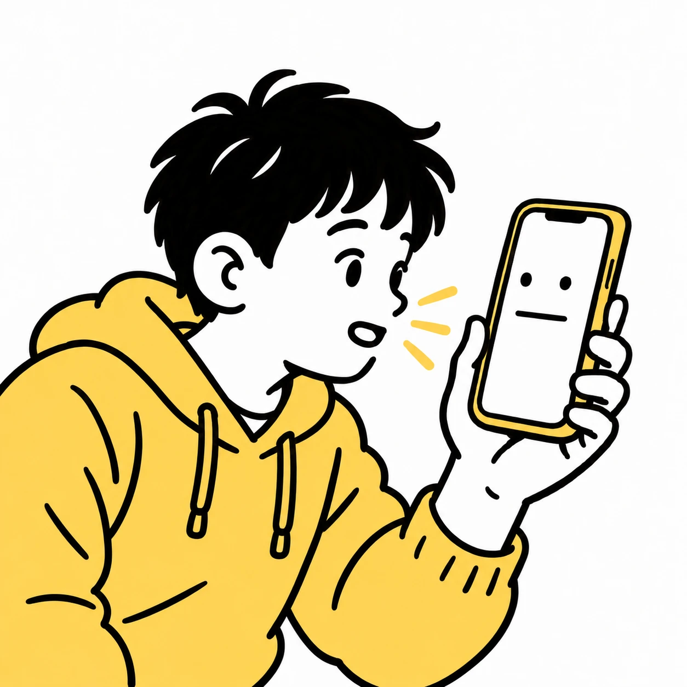
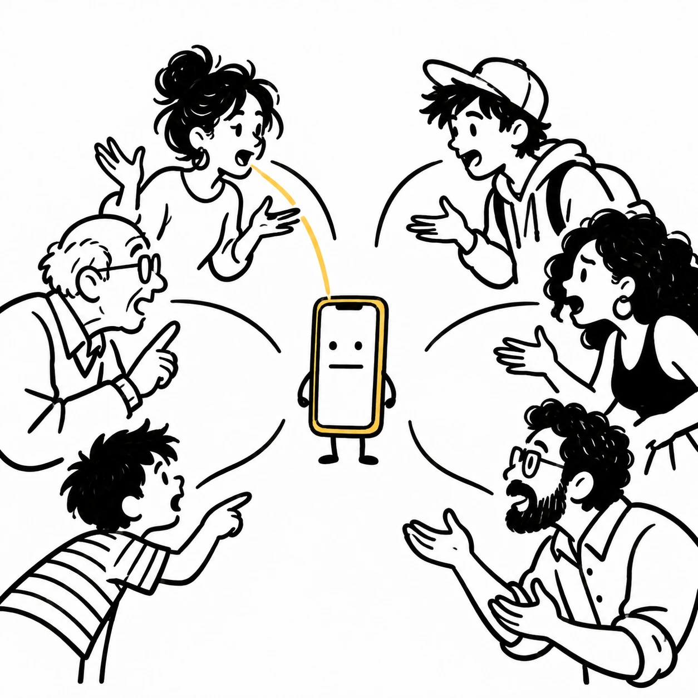
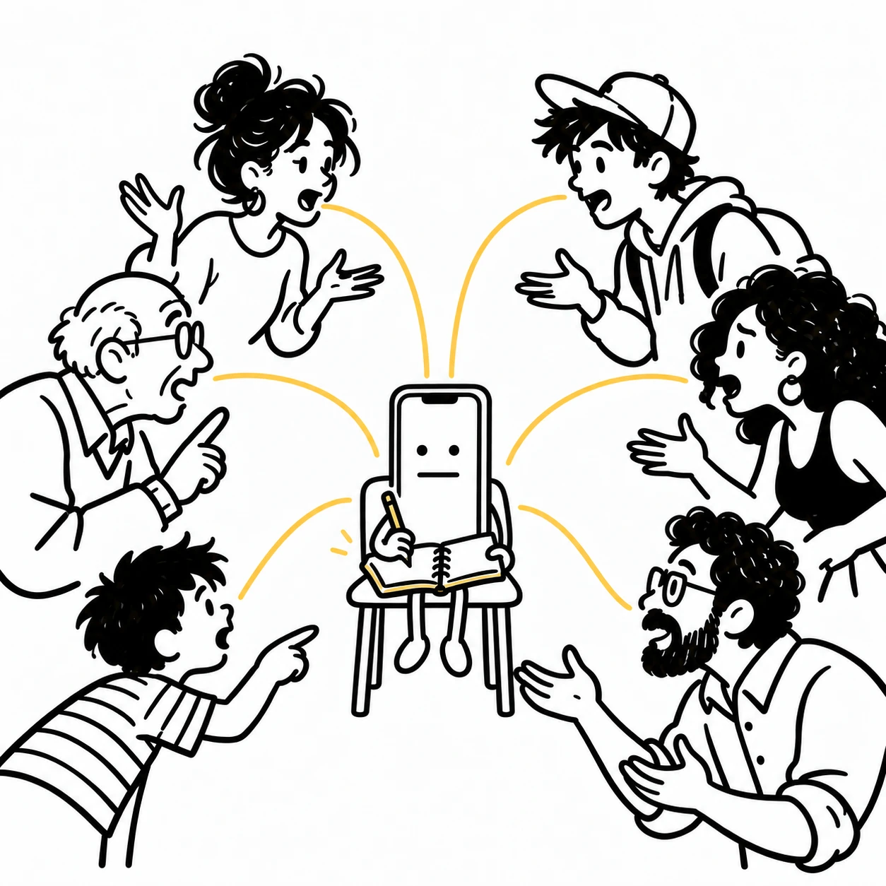

How AI is changing the way we speak English
Global English · essay presentation
Max Aulinger
press → to start · F = fullscreen

how I got to the topic
I am German, but I speak a strong Bavarian dialect. When I use voice-to-text, my phone often writes nonsense. For example:
The software is not broken. I just don’t sound like the people it learned from.
So I asked myself: if this happens to me in German — what happens to English speakers with an accent?

the evidence
Stanford University, published in PNAS (2020). The researchers tested five speech recognition systems — Amazon, Apple, Google, IBM and Microsoft — with the same sentences. Non-native speakers run into the same wall.
why this changes the language
TikTok and YouTube read your video through automatic captions. If the caption is wrong, fewer people ever see you — and creators are already changing their pronunciation to fix that.
my argument
If you do not sound standard, fewer people see you.
Software created a language problem.

the essay · a first draft
A few days ago, I was trying to use a voice-to-text feature on my phone, but it
produced a lot of mistakes. Since I often speak German with a Bavarian dialect, the AI
simply struggled to understand me. This everyday situation made me think about our
course topic and how technology handles the English language. AI and algorithms are
becoming more and more present in our daily lives—whether you like it or not. But
I realized that these tools do not just passively transcribe what we say; they are
actually starting to change how people speak English. Because algorithms often only
understand one specific standard, users are forced to adapt their voices to the machine.
In this essay, I want to discuss how AI enforces Standard English Ideology
and how
this changes the power dynamics of modern communication.
While thinking about my own experience, I noticed that modern technology perfectly shows how this ideology works in the real world today. When we look at auto-caption tools or speech recognition, we can see a clear power dynamic. Most of these AI models are trained on data from white, standard American English speakers. For example, a 2020 study from Stanford University tested speech recognition systems from large tech companies. The researchers found that the software made significantly more mistakes when Black people were speaking compared to white speakers. The same issue applies to non-native speakers from all over the world. Because they have an accent, the software simply fails to transcribe their words correctly.
This creates a strict power imbalance on platforms like TikTok or YouTube. These platforms use automatic transcriptions to understand what a video is about and to show it to the right audience. If the algorithm cannot understand your accent, your content might not reach many people, which means you can lose views and even income. Because of this disadvantage, we can see a real shift in the English language: many creators are actually starting to change their pronunciation. They try to sound more like the standard just to be understood by the machine.
In conclusion, Standard English Ideology is built directly into the software we use every day, and it is actively changing how people speak globally. If you do not fit the linguistic standard, you lose visibility online. Since English is an international language, AI must be trained to understand diverse accents, instead of forcing everyone to adapt to one single standard.